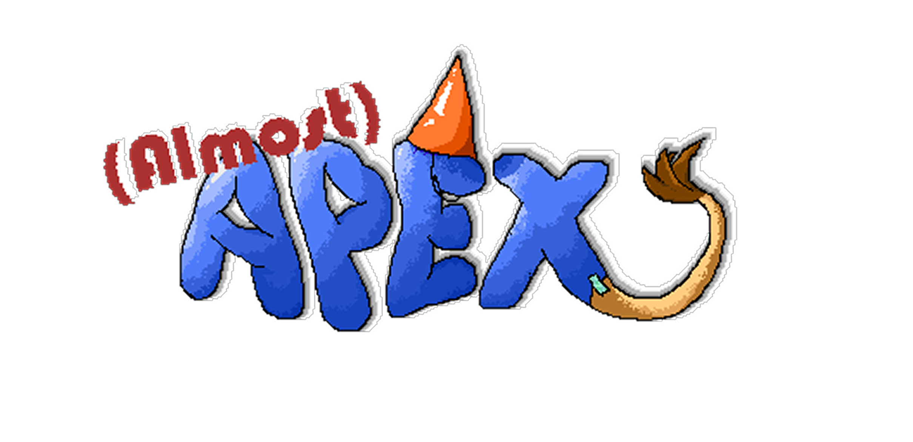

by Bryan Wong and Braden Switzer
This document describes a game called "Almost Apex", which is designed to be a 2.5D side-scrolling roguelike where you play as a hapless blob who refused to evolve properly. The game features randomized accessory drops, four unique biome levels, and boss fights against terrifying animals that make the blob's fake adaptations look even more absurd. The game will employ sprite-based animation, tiled backgrounds, collision detection, physics, AI, side scrolling & gravity, efficient memory management, render threading, and more basic 2D game techniques.
Almost Apex will be developed for the Windows Platform using the McKilla's Gorilla Wolfie2D game engine, which is a bare-bones engine developed by Richard McKenna for rapid prototyping 2D games. DirectX will be used as the underlying rendering technology. XACT will be used for all music and sound effects management. Artwork will be made through Aseprite.
Millions of years ago, when life on Earth began to branch and specialize, organisms evolved with their surroundings. They grew claws, fangs, wings, or whatever they needed to survive. However, one little cell didn't get the memo. While every other creature climbed the evolutionary ladder, this cell just grew bigger into the blob we have today, squishy and completely unevolved.
Now the world is ruled by apex predators. Ferocious sharks roam the ocean waters, cunning tigers rule the jungle, armored crocodiles lurk in swamps and fearsome eagles dominate the skies. Alone but ambitious, the blob has a brilliant plan. Scavenging accessories, fallen lesser creatures and salvaging random items, the blob sets off to prove you don't need millions of years of evolution… especially when you have string, tape, and a big dream!
The player's goal is to reach the top of ALL food chains by taking on the apex predators of each of the four biome levels. Between the Ocean, Swamp, Jungle, and Mountain, the blob will defeat enemies and collect randomized accessories along the way. Each level ends with a boss fight against the respective apex predator. The blob must use its scavenged accessories to overcome enemies that should be superior to it. Survive all four biomes and become the apex of apex predators to prove that evolution is overrated.
The game will work/look similar to that of the original Teenage Mutant Ninja Turtles game and/or Don't Starve Together.
Blob will have to be careful as there are a bunch of different animals all trying to prey on him. However, Blob begins each run with a single weak ability: Slime Spit, a short-range projectile that does minimal damage. The blob is slow, fragile, and in all honesty, pathetic which is the point.
As the player progresses through each level, they acquire accessories to the game's core power-up system. Accessories are obtained in three ways:
Each accessory visually attaches to the blob's sprite (strapped on with visible string, tape, or rubber bands) and grants a gameplay-altering ability. Accessories are randomized each run, meaning the blob ends up looking and playing differently every time. By the final boss, the blob is a walking collage of mismatched animal parts.
Almost Apex follows a roguelike structure, so when Blob dies, the run is over and the player starts fresh. However, not everything is lost. Accessories discovered in previous runs are added to a permanent collection, unlocking them as potential starting abilities for future runs. On the first ever run, Blob begins with only Slime Spit. But after a few runs, the player may choose to start with a different base ability drawn from accessories they've previously found, adding variety and strategy to each new attempt.
The player must tackle the levels in order: the Mountain, the Swamp, the Ocean, and the Jungle. The game, after each level, will scale enemies for each following level, and once each level is completed, the player may select those levels at any time from Blob's in house map. Since Blob keeps all accessories picked up between levels, each subsequent level compensates by increasing the difficulty. More enemies spawn, enemies become more aggressive, environmental hazards are more frequent, and boss attack patterns become faster and more complex.
Upon death or completing all four levels, the player is shown a run summary screen displaying accessories collected, enemies defeated, levels cleared, and which boss took them down (if they died). This encourages the player to jump back in and try a different path or a different starting ability.
The main menu will be a small sample of the more open maps contained inside blob's home. Inside of this space holds every function that the regular menu system should hold. There are five of these such functions. If the player interacts with blob's wall map ("2" in the wireframe), blob can access the aforementioned level selection. If the player interacts with the bed (denoted by "3" on the wireframe), the player may exit the game. If the player interacts with the book table ("5" on the wireframe), they may access a book interface that holds the help page, the control page and the about page. Locations "1" and "4" simply represent the type of y-"squish" that blob will receive as he moves further up in the y-direction (towards the door).
| Accessory | Look | Ability |
|---|---|---|
| Shark Fin | Cardboard fin taped to the top of Blob | Acceleration based speed |
| Piranha Jaws | Denture-like jaws attached to the front of Blob | New jaw attack |
| Rabbit Shoes | Oversized shoes on the bottom of Blob | Increased jump height |
This game will be played using just a keyboard. Once started, use the following:
The splash screen GUI presents the Almost Apex logo. Upon clicking anywhere, pressing any key, or the intended play button, the player is brought directly into Blob's House.
Instead of a traditional menu with buttons, the main menu is Blob's House, a small room viewed from the same 2.5D perspective as the rest of the game. The player controls Blob and walks around interacting with objects by pressing E. Blob returns to this house between every level during a run, with all collected accessories still visible on the sprite. The house contains the following interactable objects:
While gameplay is in progress, the following will be displayed at all times:
In addition, pressing ESC during gameplay pauses the game and presents a pause overlay with the following options:
Upon death or completing all four levels, a run summary screen is displayed showing: accessories collected, enemies defeated, levels cleared, and which boss took Blob down (if the player died). A button returns the player to Blob's House to start a new run.
All artwork in the game will be original, created using Aseprite. The following needs to be created:
A round, blue, gelatinous blob. The base sprite is intentionally simple so that accessories can be visually layered on top. Blob will require animations for:
Each accessory needs a sprite that visually attaches to Blob. All accessories should look hand-made and poorly attached with visible string, tape, or rubber bands. Accessories must layer correctly when multiple are equipped simultaneously. Each accessory with an active ability (such as Piranha Jaws or Rabbit Shoes) will need its own use/activation animation. At minimum, sprites are needed for:
Each biome has its own set of unique enemy types. Each enemy requires animations for:
Four boss sprites, one per biome: Shark (Ocean), Crocodile (Swamp), Tiger (Jungle), and Eagle (Mountain). Each boss should be large and intimidating in contrast to Blob. Each boss requires animations for:
The interactive main menu room. Art is needed for the room background.
Four complete tilesets, one per biome (Mountain, Swamp, Ocean, Jungle).
Four parallax scrolling background sets, one per biome, to establish atmosphere and depth. These are non-collidable and sit behind the gameplay layer.
Art is needed for the health bar, accessory icons for the HUD, the run summary screen, and the book interface pages.
All sound effects will be original. Sounds must be made to coincide with each of the following events:
Each area of the game will have its own background music track to establish atmosphere:
Logo

Splash Screen

Main Menu

Levels Selection Screen

Controls Screen

Help Screen

In-Game Screen